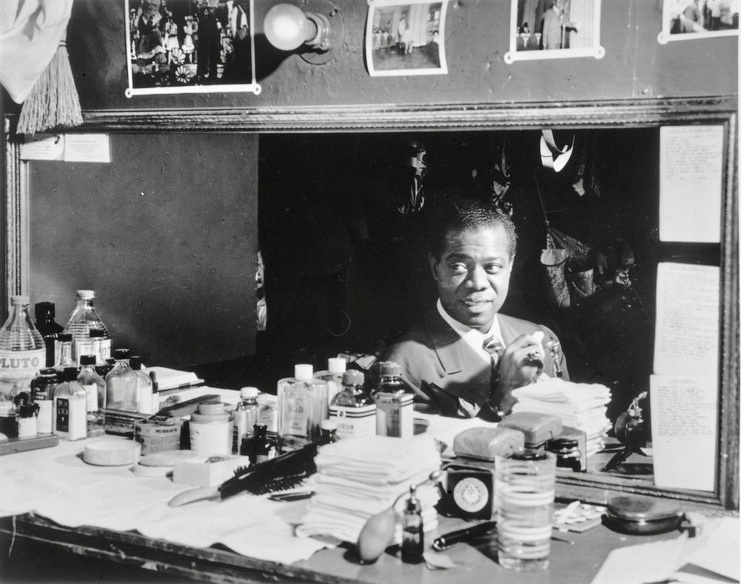
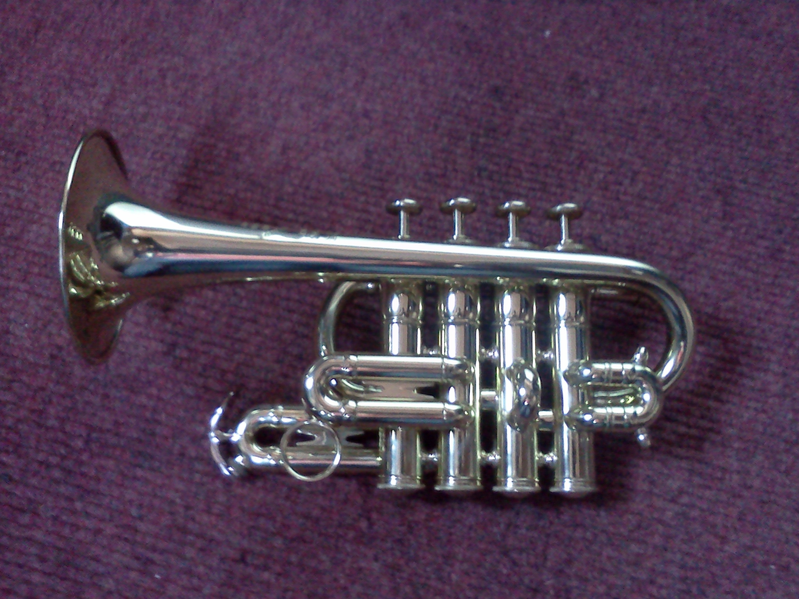

Armstrong-worthy piccolo trumpet concept
Imagine a bright, agile piccolo trumpet worthy of Louis Armstrong's bold tone. This page blends historic context, instrument detail, and a vibrant design to create an engaging tribute.
Legendary roots and jazz heritage
Louis Armstrong helped define the trumpet in jazz with commanding solos, phrasing, and charisma. Though he is best known for his larger cornet and trumpet work, the piccolo trumpet represents the same fearless melodic expressiveness in a higher register.
- Louis Armstrong rose to fame in the 1920s and became one of the most influential jazz soloists in history.
- The piccolo trumpet is prized for its bright, piercing tone and agile facility in the upper range.
- This page is designed as a playful, hypothetical posting, not a real estate or estate offering.
- The instrument is presented here as a creative homage to Armstrong's adventurous musical spirit.


Instrument profile
The piccolo trumpet is typically built in B♭ or A and has a smaller bore than a standard trumpet. It excels in high-register passages, offering a sparkling tone well suited for orchestral and jazz-inspired solo lines.
- Compact design with a higher pitch and clear projection.
- Often used in baroque trumpet repertoire, as well as modern jazz and studio recording.
- Well-suited for vibrant, expressive performances that demand agility and brightness.
This page is a hypothetical posting and does not reflect any official offering or endorsement by the Louis Armstrong estate.